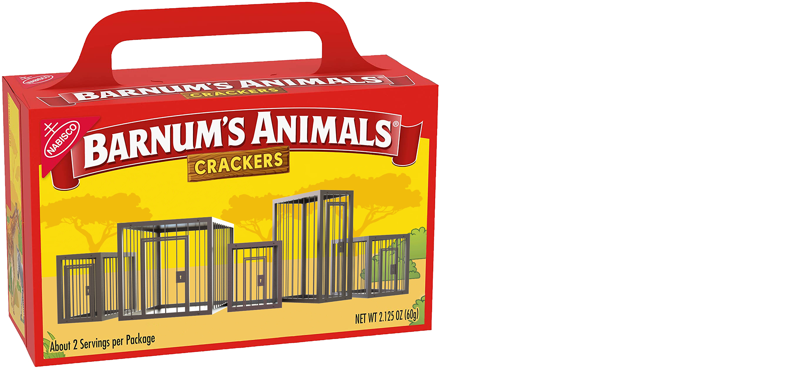
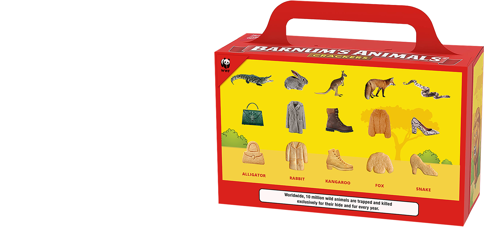

Idea
Barnum’s Animal Crackers will partner with World Widelife Fund to raise awareness for wild animals that are killed for their hide and fur. The new product launch will remove all animals from the original cracker box and replace them with animal cruelty crackers shaped as clothing pieces and accessories.

